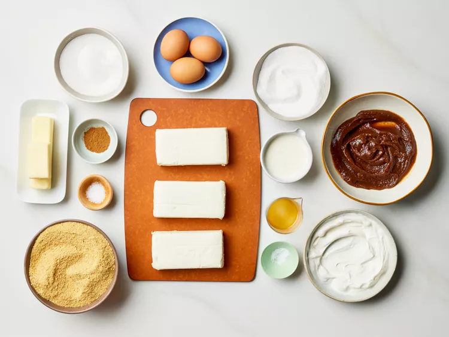
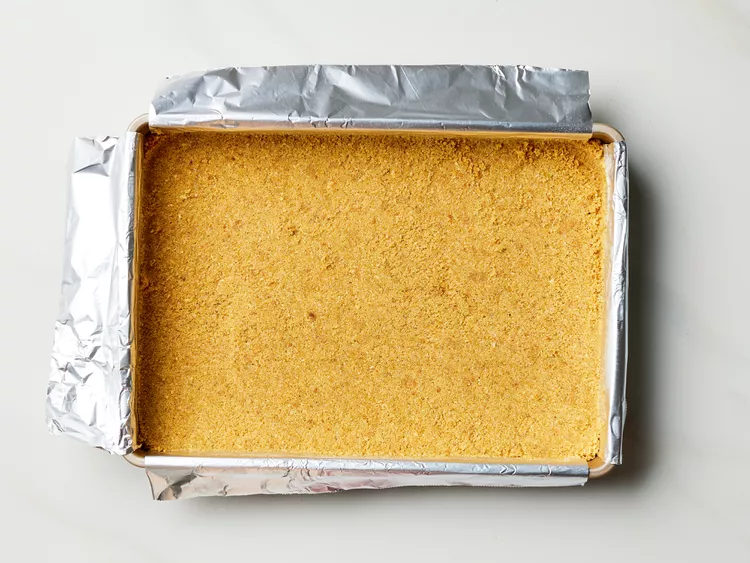
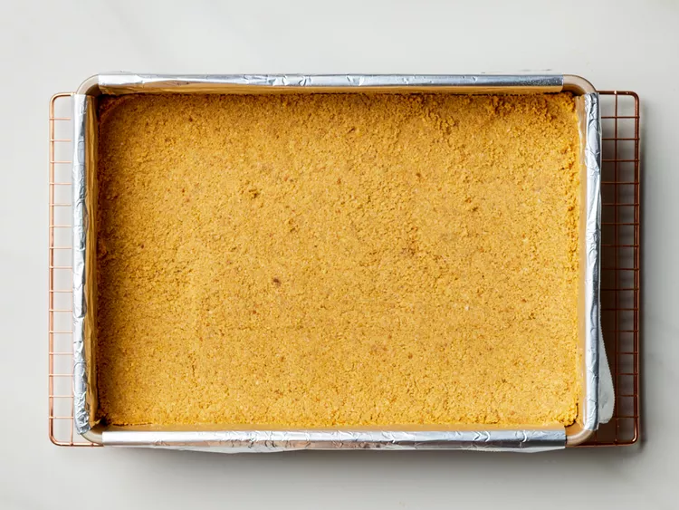
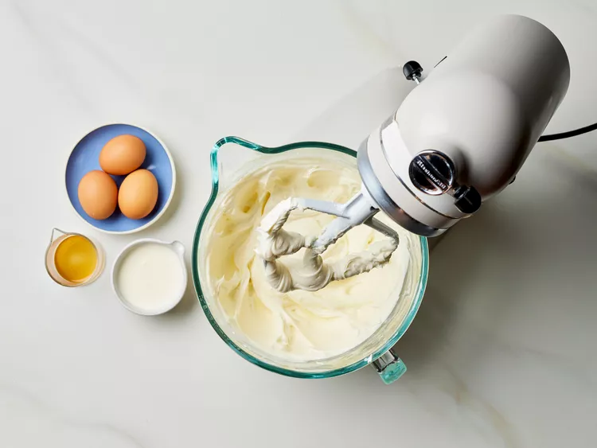
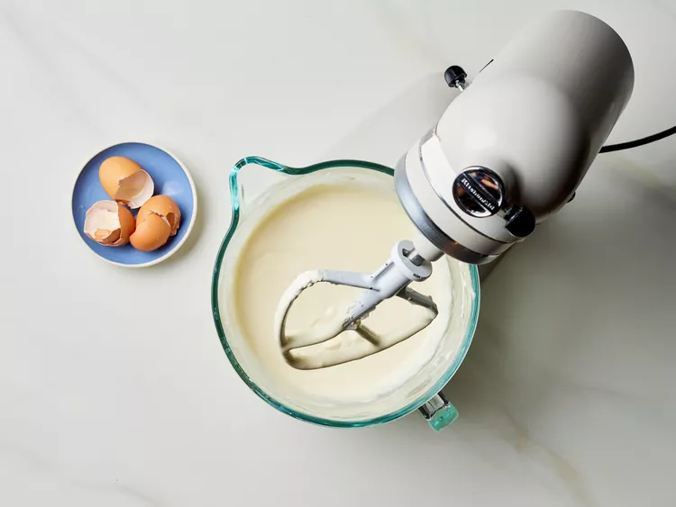
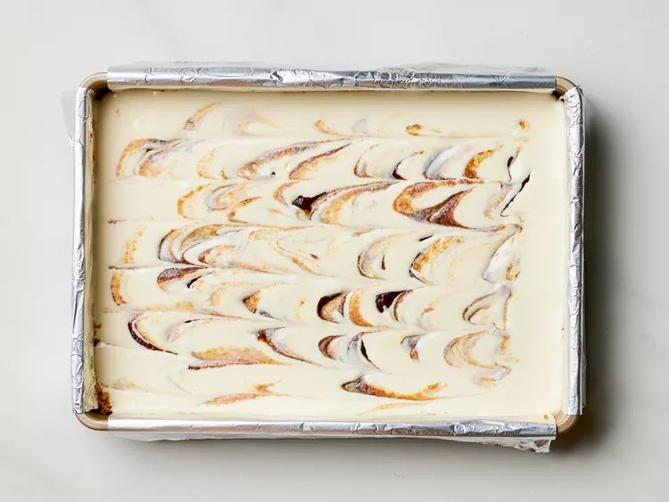
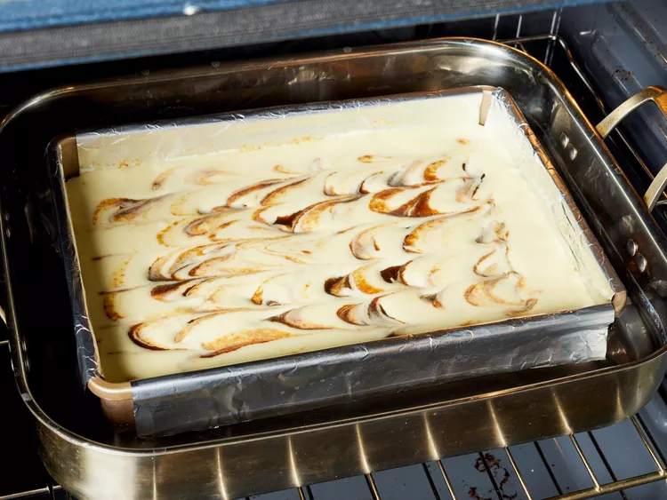
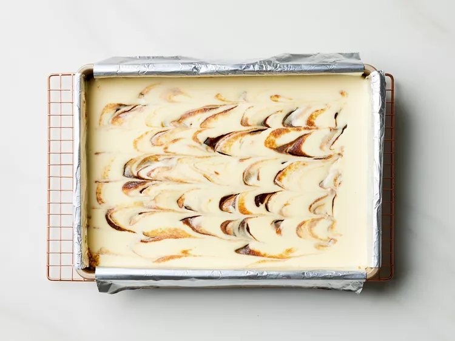
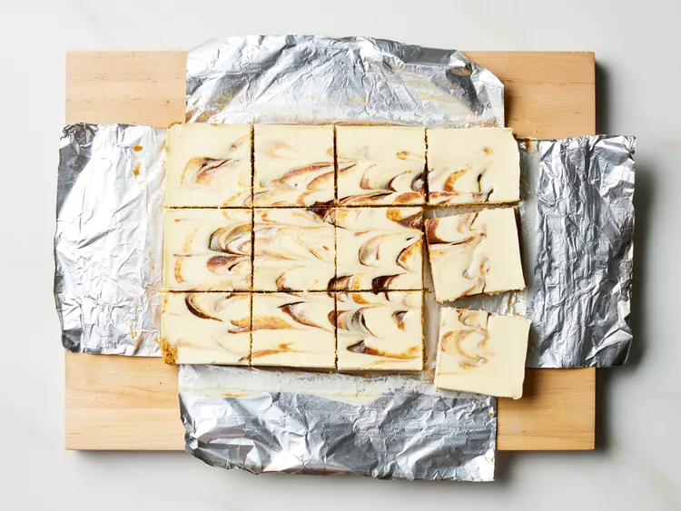

These apple butter cheesecake bars taste amazing. Think rich and creamy cheesecake filling studded with swirls of apple butter and baked in a cinnamon graham cracker crust.
Gather all ingredients.
Prepare the Graham Cracker Crust: Preheat oven to 350 degrees F (175 degrees C) with rack in lower third position. Line a 9- x 13-inch baking pan with aluminum foil, leaving a 2-inch overhang on the long sides. Lightly coat pan and foil with cooking spray.
Stir together graham cracker crumbs, butter, sugar, cinnamon, and salt in a large bowl until combined and evenly moistened. Press mixture evenly into the bottom of the prepared pan.
Bake in the preheated oven until lightly golden and fragrant, 7 to 10 minutes. Let cool slightly, about 15 minutes. Reduce oven temperature to 300 degrees F (150 degrees C).
Prepare the Cheesecake Filling: Beat cream cheese and sour cream in a stand mixer fitted with the paddle attachment on medium speed until fluffy and fully combined, 3 to 4 minutes. Beat in sugar and salt on medium speed until combined, about 1 minute.
Add eggs, 1 at a time, beating on low speed just until combined after each addition and stopping to scrape down sides of bowl with a rubber spatula as needed, 1 to 2 minutes total. Add heavy cream and vanilla extract; beat on low speed just until combined.
Pour Cheesecake Filling into cooled Graham Cracker Crust. Evenly dollop apple butter over Cheesecake Filling; using a butter knife or small spatula inserted about halfway into filling, decoratively swirl apple butter using zig-zag motions until desired distribution.
Place baking pan inside a large roasting pan and place in preheated oven. Pour boiling water into roasting pan so it reaches halfway up the sides of the baking pan. Bake at 300 degrees F (150 degrees C) until cheesecake slightly jiggles when shaken but is set around the edges, 35 to 40 minutes.
Turn off oven and leave oven door cracked open 7 to 8 inches; let cheesecake cool in oven for 30 minutes. Remove roasting pan from oven and carefully remove cheesecake from water bath. Let cool in pan at room temperature 30 minutes, then cover and refrigerate until completely chilled, at least 4 hours or up to overnight.
Using foil overhang as handles, lift the cheesecake out of the pan and place it onto a cutting board. Cut it into 12 (3 x 2 1/2-inch) rectangles. Serve chilled.
